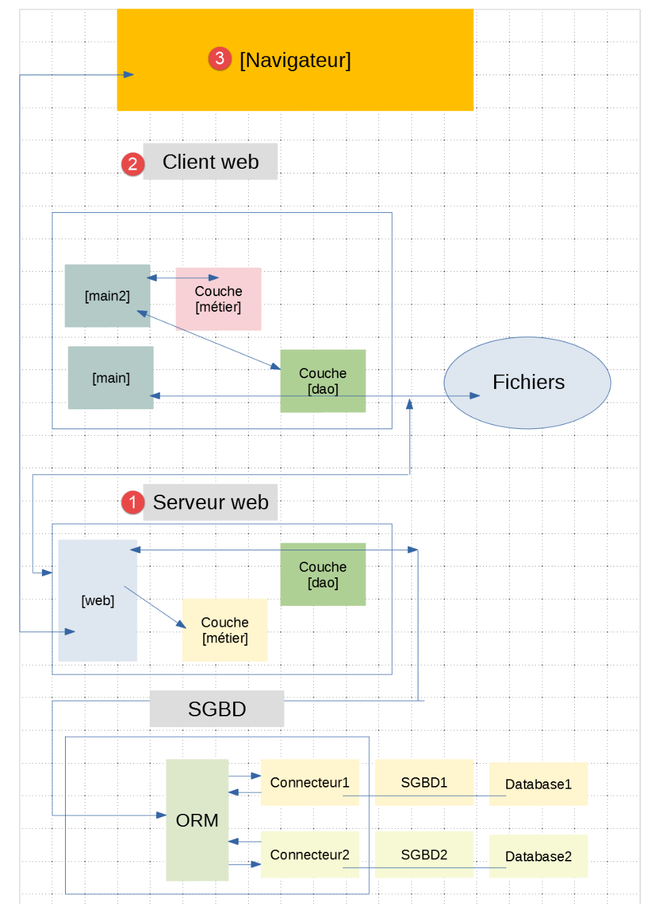
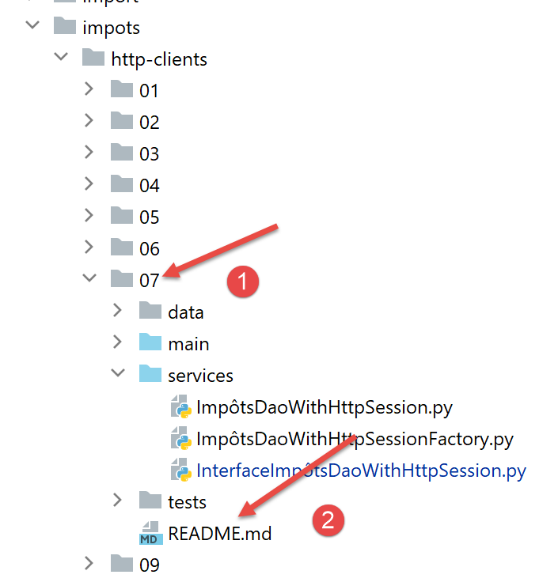

1. Prefácio
O PDF deste documento está disponível |AQUI|.
Os exemplos deste documento estão disponíveis |AQUI|.
Este documento fornece uma lista de scripts Python em vários campos:
- os fundamentos da linguagem;
- gestão de bases de dados MySQL e PostgreSQL;
- programação de redes TCP/IP (protocolos HTTP, POP3, IMAP, SMTP);
- programação web MVC com o framework FLASK;
- arquiteturas de três camadas e programação baseada em interfaces;
Este não é um curso abrangente de Python, mas sim uma coleção de exemplos destinada a programadores que já tenham utilizado uma linguagem de script como Perl, PHP ou VBScript, ou a programadores habituados a linguagens tipadas como Java ou C# que estejam interessados em descobrir uma linguagem de script orientada para objetos. Este documento não é adequado para leitores com pouca ou nenhuma experiência em programação.
Este documento também não é uma coleção de «melhores práticas». Desenvolvedores experientes podem achar que parte do código poderia ser escrito de forma mais elegante. O único objetivo deste documento é fornecer exemplos para quem deseja aprender Python 3 e a estrutura Flask. Assim, poderão aprofundar os seus conhecimentos utilizando outros recursos.
Os scripts estão comentados e os resultados da sua execução são apresentados. Por vezes, são fornecidas explicações adicionais. Este documento requer uma leitura ativa: para compreender um script, é necessário ler o seu código, os seus comentários e os resultados da sua execução.
Os exemplos deste documento estão disponíveis |AQUI|:

Este documento é uma atualização de um documento mais antigo publicado em junho de 2011 |https://tahe.developpez.com/tutoriels-cours/python/|. O documento de 2011 foi criado utilizando o interpretador Python 2.7. Desde então, foram lançadas versões Python 3.x. Em fevereiro de 2020, a versão atual é a 3.8. As versões 3.x introduziram uma ruptura na compatibilidade entre versões: o código que funciona no Python 2.7 pode não funcionar no Python 3.x. Isto é particularmente verdadeiro para a saída da consola. Na versão 2.7, pode escrever [print "toto"], enquanto na 3.x deve escrever [print("toto")]: os parênteses são obrigatórios. Esta simples alteração significa que a maior parte do código fornecido com o documento de 2011 é inutilizável diretamente com o Python 3.x. Tem de ser modificado.
Este novo documento faz mais do que apenas atualizar o código de 2011 para torná-lo executável com o Python 3.8:
- as secções sobre programação TCP/IP e utilização de bases de dados sofreram alterações significativas;
- a secção sobre programação web, que anteriormente era apenas uma introdução, é agora um curso completo utilizando o framework Flask;
Para criar este curso, adotei uma abordagem pouco convencional: adaptei o curso de PHP [Introdução ao PHP 7 através de exemplos]. Por isso, não segui as estruturas tradicionais dos cursos de Python ou Flask. Acima de tudo, queria saber como poderia fazer em Python 3 o que tinha feito em PHP 7. O resultado foi que consegui recriar, em Python 3 / Flask, todos os exemplos do curso de PHP 7.
Este documento pode conter erros ou omissões. Os leitores podem utilizar o tópico de discussão |fórum| para os comunicar.
O conteúdo do documento é o seguinte:
Capítulo | Repositório de código | Índice |
Visão geral do curso | ||
Configurar um ambiente de trabalho | ||
[Noções básicas] | Noções básicas da linguagem Python – estruturas da linguagem – tipos de dados – funções – saída da consola – cadeias de formatação – conversão de tipos – listas – dicionários – expressões expressões | |
[cadeias de caracteres] | Notação de cadeias – métodos da classe <str> – codificação/decodificação cadeias de caracteres em UTF-8 | |
[exceções] | Tratamento de exceções | |
[funções] | Âmbito das variáveis – Parâmetros Passagem – Utilização de módulos – O caminho do Python – Parâmetros – Funções Funções | |
[ficheiros] | Ler/gravar um ficheiro de texto – trabalho com ficheiros codificados em UTF-8 – manipulação de ficheiros JSON | |
[taxes/v01] | Versão 1 da aplicação Exercício: cálculo do imposto sobre o rendimento . A aplicação está disponível em 18 versões – A Versão 1 implementa uma solução procedural | |
[importações] | Gestão das importando módulos – é apresentado um método de é apresentado – é utilizado ao longo de todo o documento – gestão do caminho do Python | |
[impots/v02] | A versão 2 da aplicação baseia-se na versão 1, reunindo todas as constantes de configuração num ficheiro de configuração que também gerencia o caminho do Python | |
[impots/v03] | A versão 3 da aplicação baseia-se na versão 2, utilizando funções encapsuladas num módulo — a é gerida através da configuração — introdução de um ficheiro JSON para ler os dados necessários para o cálculo de impostos e gravar os resultados do cálculo | |
[classes/01] | Classes – herança – métodos e propriedades – getters/setters – construtor – [__dict__] propriedade | |
[classes/02] | Introdução às classes [BaseEntity] e [MyException] utilizadas ao longo do resto do documento – [BaseEntity] facilita as conversões objeto/dicionário . | |
[três camadas] | Arquitetura em camadas e programação baseada em interfaces. Este capítulo apresenta os métodos de programação utilizados ao longo do resto do documento | |
[taxes/v04] | Versão 4 da aplicação – esta versão implementa uma solução com uma arquitetura em camadas, programação baseada em interfaces e o uso de classes derivadas de [BaseEntity] e [MyException] | |
[bases de dados/mysql] | Instalação do SGBD MySQL – ligar a uma base de dados – criar uma tabela – executar SELECT, UPDATE, DELETE, e INSERT – transações – consultas SQL SQL | |
[bases de dados/postgresql] | Instalação do SGBD PostgreSQL – ligar-se a uma base de dados – criar uma tabela – executar SELECT, UPDATE, DELETE, e INSERT – transações – consultas SQL SQL | |
[bases de dados/qualquer SGBD] | Escrever código independente do SGBD | |
[bases de dados/sqlalchemy] | O ORM (Object- ) – um ORM permite uma abordagem unificada para trabalhar com diferentes SGBDs – mapeando classes para tabelas SQL – operações nas classes que representam tabelas SQL | |
[taxes/v05] | Versão 5 da aplicação de cálculo de impostos – Utilizando a arquitetura em camadas da versão 04 e o ORM SqlAlchemy para funcionar com os SGBDs MySQL e PostgreSQL . | |
[inet] | Programação Web – Protocolo TCP/IP (Protocolo de Controlo de Transmissão / Protocolo de Internet) – Protocolos HTTP (Protocolo de ) – SMTP (Protocolo Simples de Transferência de Correio) – POP (Protocolo de Correio) – IMAP (Protocolo de Acesso a Mensagens na Internet ) | |
[flask] | Serviços Web com o framework Flask – exibição de uma página HTML – serviço web JSON – Pedidos GET e POST – gerir uma sessão web | |
[impostos/servidores-http/01] [impostos/clientes-http/01] | Versão 6 da aplicação Exercício – Criação de um serviço web JSON para cálculo de impostos com uma arquitetura multicamadas – Escrever um cliente web para este servidor com um arquitetura multicamadas – programação cliente/servidor – utilização do módulo [requests] | |
[taxes/http-servers/02] [impostos/clientes-http/02] | Versão 7 da aplicação exercício – A versão 6 foi melhorada: o cliente e o servidor são multithreaded – [Logger] utilitários para registar as trocas cliente/servidor – [SendMail] para enviar um e-mail ao administrador da aplicação administrador | |
[taxes/http-servers/03] [taxas/clientes-http/03] | Versão 8 da aplicação exercício – A versão 7 foi melhorada através da utilização de uma sessão web | |
[xml] | Gestão de XML (eXtended Markup ) com o módulo [xmltodict] | |
[taxes/http-servers/04] [impostos/clientes-http/04] | Versão 9 do aplicativo exercício – a versão 8 é modificada para incluir trocas cliente/servidor em XML; | |
[taxes/http-servers/05] [impostos/clientes-http/05] | Versão 10 da aplicação exercício – em vez de processar N contribuintes através de N pedidos GET, é utilizada uma única solicitação POST é utilizada com os N contribuintes no corpo da solicitação POST corpo | |
[impostos/servidores-http/06] [impostos/clientes-http/06] | Versão 11 da aplicação exercício – a arquitetura cliente/servidor do aplicativo é modificada: a camada [de negócios] passa do servidor para o cliente | |
[impostos/servidores-http/07] | Versão 12 do aplicativo exercício – esta versão implementa um servidor MVC (Modelo–Visão– Controller) que fornece JSON, XML e HTML de forma intercambiável, dependendo da solicitação do cliente. Este capítulo implementa as versões JSON e XML do servidor | |
[impots/http-clients/07] | Implementação dos clientes JSON e XML para o servidor MVC na Versão 12 | |
[impots/http-servers/07] | Implementação do servidor HTML na versão 12 – utilizando o framework CSS Bootstrap – | |
[impots/http-servers/08] | Versão 13 da aplicação exercício – Refatoração do código da versão 12 – gestão de utilizando o módulo [flask_session] e um servidor Redis – utilizando senhas | |
[importações/servidores-http/09] [importações/clientes-http/09] | Versão 14 da aplicação exercício – implementação de URLs com um token CSRF (Cross-Site Request ) | |
[impots/http-servers/10] | Versão 15 da aplicação exercício – refatoração do código da versão 14 para lidar com dois tipos de ações: ASV (Ação Mostrar Vista), que são usadas apenas para exibir uma vista sem alterar o estado do servidor, e ADS (Action Do Something), que executam uma ação que altera o estado do servidor — todas estas ações terminam todas com um redirecionamento para uma ação ASV — isto permite o tratamento adequado das atualizações de página no navegador do cliente | |
[impots/http-servers/11] | Versão 16 da aplicação – Gestão de URLs com prefixos | |
[importações/servidores-http/12] | Versão 17 da aplicação – portando a versão 16 para um servidor Apache/Windows | |
[impots/http-servers/13] | Versão 18 da aplicação – corrige um bug na versão 17 |
A versão final do exercício da aplicação é uma aplicação cliente/servidor de cálculo de impostos com a seguinte arquitetura:

A camada [web] acima é implementada utilizando uma arquitetura MVC:

O conteúdo deste documento é denso. Os leitores que o lerem até ao fim irão adquirir uma compreensão sólida da programação web MVC em Python/Flask e, além disso, uma compreensão sólida da programação web MVC noutras linguagens.
Os leitores que preferirem ver o código, testá-lo e modificá-lo em vez de ler uma explicação podem proceder da seguinte forma:
- Configure um ambiente de desenvolvimento:
- um interpretador Python;
- o IDE PyCharm Community;
- Laragon (servidor Apache, SGBD MySQL, servidor Redis);
- a base de dados PostgreSQL;
- o cliente HTTP Postman;
- o servidor de e-mail hMailServer;
- Explore o código nos exemplos |AQUI|:

- Em cada pasta, existe um ficheiro [README.md] que associa a pasta a um capítulo do curso e resume o seu conteúdo:
O ficheiro [README.md] tem o seguinte aspeto:

É improvável que o leitor leia o curso na íntegra:
- Um leitor iniciante poderá ler os capítulos 1 a 15 e parar por aí. Poderá então dedicar algum tempo a programar os seus próprios scripts em Python antes de regressar a este curso;
- Os leitores com conhecimentos básicos de Python que queiram aprender sobre bases de dados e ORM (Object Relational Mapper) [SQLAlchemy] poderão considerar suficientes os capítulos 16 a 20;
- Os leitores que desejam aprender programação web (HTTP, SMTP, POP3, IMAP) podem ler o Capítulo 21. Este capítulo é bastante complexo e aborda scripts avançados. Pode ser lido em dois níveis:
- para aprender sobre protocolos de Internet;
- para obter scripts que utilizam estes protocolos;
- Os leitores com conhecimentos básicos de Python que desejem aprender programação web utilizando o framework Flask devem ler o Capítulo 22;
- Os leitores que desejam aprofundar-se na programação web com o framework Flask podem estudar os capítulos 23 a 38. Estes capítulos abordam o desenvolvimento de aplicações cliente/servidor cada vez mais complexas, bem como uma aplicação HTML/Python seguindo o padrão de desenvolvimento MVC (Model–View–Controller). Esta aplicação é desenvolvida no capítulo 32. Pode parar por aí. Os capítulos seguintes introduzem alterações não fundamentais;
Serge Tahé, setembro de 2020